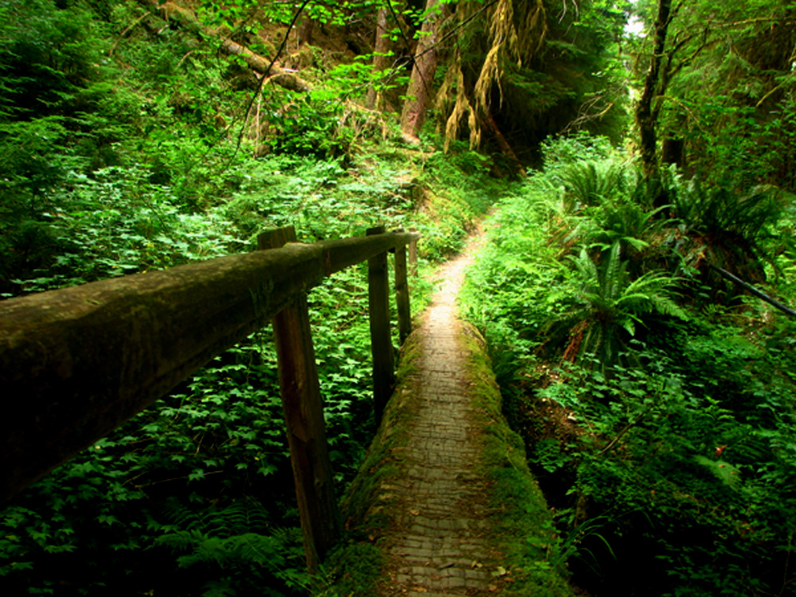
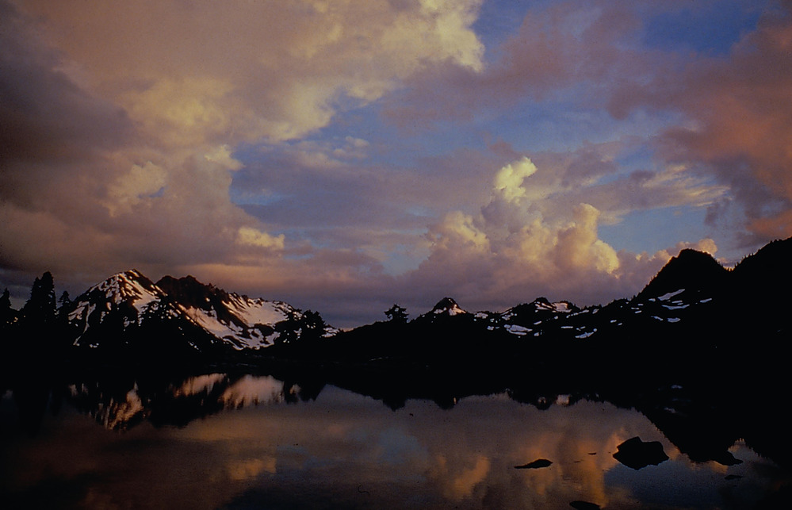
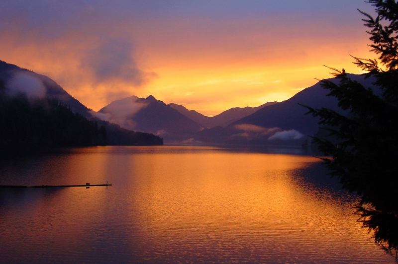
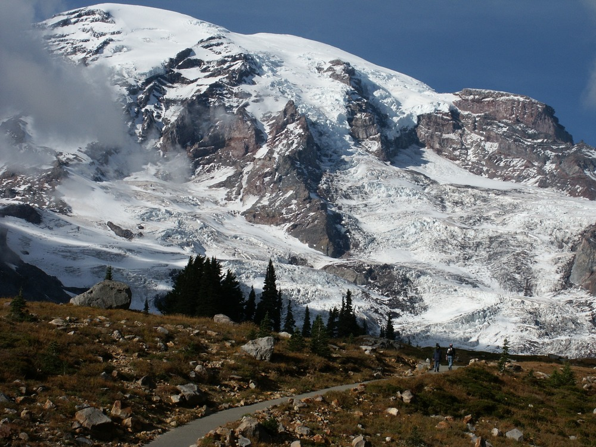
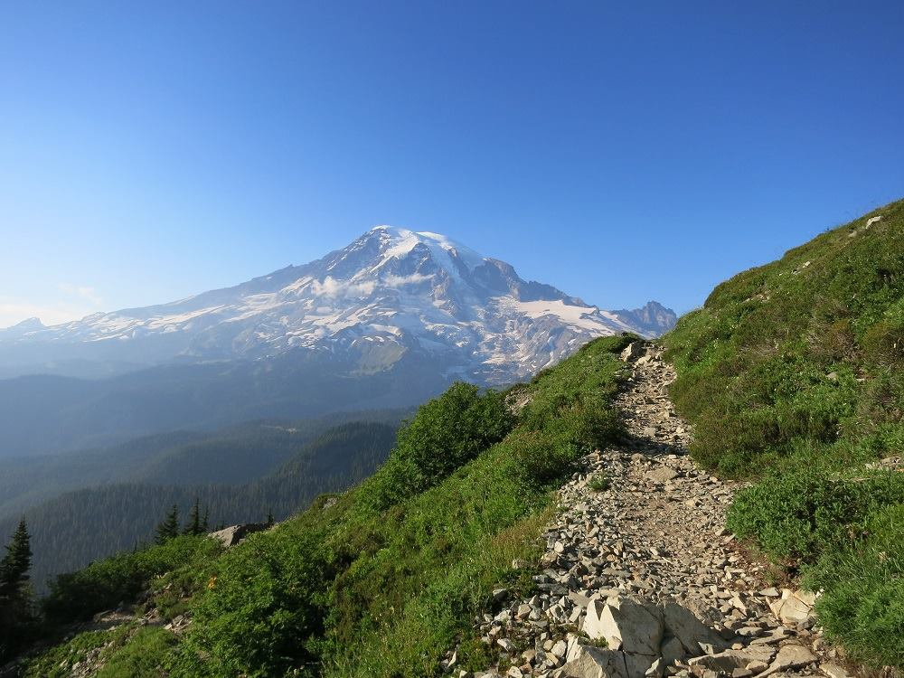
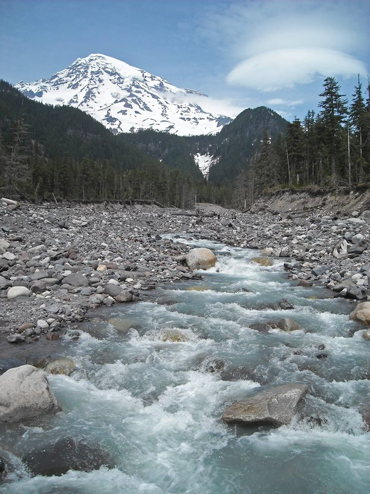
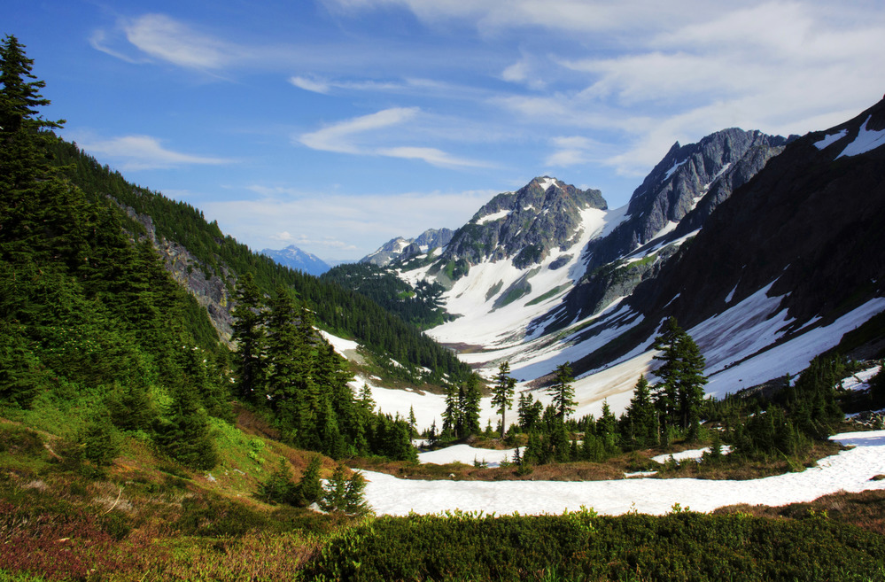
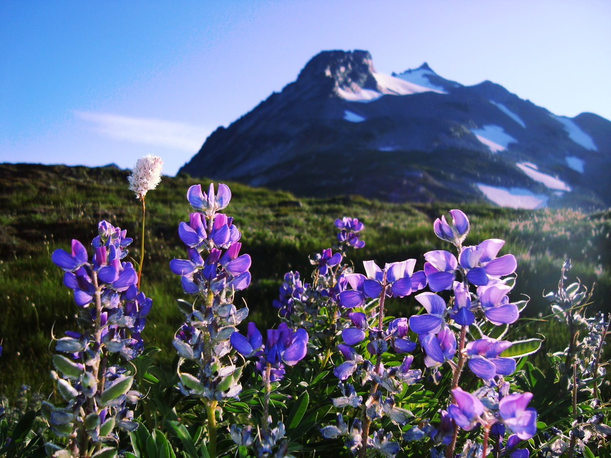

Communication & Media Studies Student | Storyteller and data-curious
Junior Communication & Media Studies major with a Data Analytics minor who turns ideas into clear stories
across writing, audio, and social. Comfortable pairing creative work with simple data to show impact.
I am a junior at Cascade State University studying Communication & Media Studies with a minor in Data
Analytics. I enjoy creating clear, audience-first content and using simple data to show what is working.
I am seeking internship roles in content, communications, and community programs.
Resume Preview
If the preview does not load in your browser, use the download button above.
Experience
Marketing and Communications Intern
Greenline Community Trust | Seattle, WA | Jun 2025 - Present
Rebuilt the nonprofit social presence and grew Instagram following by 40% in one semester.
Write and schedule a weekly newsletter reaching more than 1,200 subscribers.
Produce short-form volunteer event recaps from filming through captions.
Peer Writing Tutor
Cascade State Writing Center | Seattle, WA | Sep 2024 - Present
Coach 60+ students each term on essays, resumes, and application materials.
Led two campus workshops on clear, structured writing.
Barista
Foghorn Coffee | 2023 - 2024
Trained four new hires and supported reliable service during high-volume shifts.
Projects
First-Gen Voices Podcast (Founder & Producer)
2024 - Present
Launched a student podcast featuring first-generation college stories.
Published 15 episodes and reached 2,000+ downloads.
Own recording, editing, cover art, and release scheduling.
Exploring Pacific Northwest trails and capturing landscapes along the way. Currently building a photo-and-notes trail journal.
Podcasting & Audio Production
Recording, editing, and producing episodes for the First-Gen Voices podcast. Always experimenting with new storytelling formats.
Reading & Creative Writing
Avid reader of narrative nonfiction and personal essays. Enjoys journaling and drafting short-form pieces on identity and belonging.
Community Volunteering
Regular volunteer at the Seattle Public Library reading program, helping young readers build confidence and curiosity.
Trail Journal Photos
A rotating gallery of public-domain photos from recent Pacific Northwest trips.

Olympic National Park - Quinault TrailNPS Photo by Jon Preston. Public domain.

Olympic National Park - LaCrosse BasinNPS Photo by Jon Preston. Public domain.

Olympic National Park - Lake CrescentNPS Photo. Public domain.

Mount Rainier - Alta Vista TrailNPS Photo. Public domain.

Mount Rainier - Pinnacle Peak TrailNPS/S. Pigeon. Public domain.

Mount Rainier - Nisqually RiverNPS/C. Roundtree. Public domain.

North Cascades - Cascade Pass and Pelton BasinNPS Photo/Deby Dixon. Public domain.

North Cascades - Sahale Arm wildflowersNPS/O'Casey. Public domain.
Contact
I am currently looking for internship opportunities in content, communications, and community-focused teams.
If you are hiring, I would love to connect.